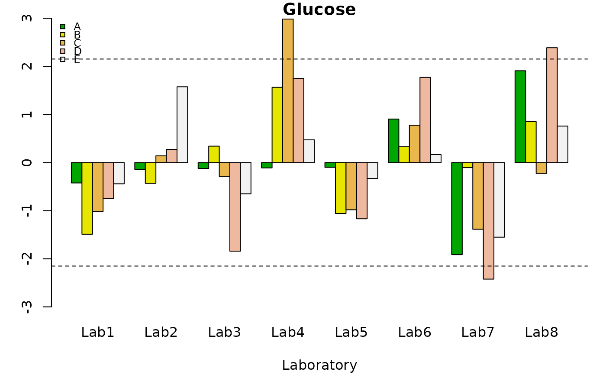

This function is used to compute the Mandel's h statistic.
Usage
h.qcs(x, ...)
# S3 method for default
h.qcs(x, var.index = 1, replicate.index = 2,
material.index = 3, laboratory.index = 4, data.name = NULL,
alpha = 0.05, ...)
# S3 method for lab.qcdata
h.qcs(x, alpha = 0.05, ...)Arguments
- x
R object (used to select the method). See details.
- ...
Arguments passed to or from methods.
- var.index
Scalar with the column number corresponding to the observed variable (the critical to quality variable). Alternatively, a string with the name of a quality variable can be provided.
- replicate.index
Scalar with the column number corresponding to the index each replicate.
- material.index
Scalar corresponding to the replicated number.
- laboratory.index
Scalar that defines the index number of each laboratory.
- data.name
String specifying the name of the variable which appears on the plots. If name is not provided, it is retrieved from the object.
- alpha
The significance level (0.05 by default)
References
Wilrich Peter-T. (2013), Critical values of Mandel's h and k, the Grubbs and the Cochran test statistic. Asta-Advances in Statistical Analysis, 97(1):1-10.
ASTM E 691 (1999), Standard practice for conducting an interlaboratory study to determine the precision of a test method. American Society for Testing and Materials. West Conshohocken, PA, USA.
Examples
library(ILS)
data(Glucose)
Glucose.qcdata <- lab.qcdata(Glucose)
str(Glucose.qcdata)
#> Classes ‘lab.qcdata’ and 'data.frame': 120 obs. of 4 variables:
#> $ x : num 41 41.5 41.4 41.2 42 ...
#> $ replicate : Factor w/ 3 levels "1","2","3": 1 2 3 1 2 3 1 2 3 1 ...
#> $ material : Factor w/ 5 levels "A","B","C","D",..: 1 1 1 1 1 1 1 1 1 1 ...
#> $ laboratory: Factor w/ 8 levels "Lab1","Lab2",..: 1 1 1 2 2 2 3 3 3 4 ...
#> - attr(*, "data.name")= chr "Glucose"
h<- h.qcs(Glucose.qcdata, alpha = 0.005)
summary(h)
#>
#> Number of laboratories: 8
#> Number of materials: 5
#> Number of replicate: 3
#> Critical value: 2.152492
#> Beyond limits of control:
#> A B C D E
#> Lab1 TRUE TRUE TRUE TRUE TRUE
#> Lab2 TRUE TRUE TRUE TRUE TRUE
#> Lab3 TRUE TRUE TRUE TRUE TRUE
#> Lab4 TRUE TRUE FALSE TRUE TRUE
#> Lab5 TRUE TRUE TRUE TRUE TRUE
#> Lab6 TRUE TRUE TRUE TRUE TRUE
#> Lab7 TRUE TRUE TRUE FALSE TRUE
#> Lab8 TRUE TRUE TRUE FALSE TRUE
plot(h)
